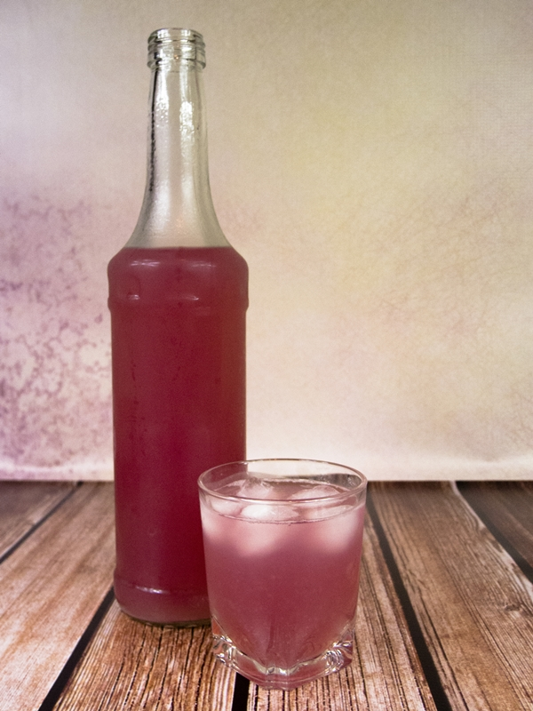

Rabarbarowe orzeźwienie
Tym razem przedstawię przepis, choć nic twórczego to nie będzie, na mój ulubiony kompot - z rabarbaru! Schłodzony idealnie nadaje się na gorące dni, ponieważ nie jest zbyt słodki. W różnych wariacjach dodawane są do niego jakieś owoce, np. truskawki, ale chcę zaprezentować jego najprostszą wersję i zachęcić do jego wypróbowania, choć wątpię by był ktoś w Polsce, kto nie zna tego smaku z dzieciństwa... :)
Składniki:
- 1 kg rabarbaru
- 2-3 l wody
- cukier brązowy lub inna dowolna substancja słodząca nie zmieniająca smaku potraw
Przygotowanie:
Rabarbar myjemy, odkrajmy liście oraz korzeń, pozostałą łodygę kroimy na ok. 3 cm kawałki. Całość wrzucamy do garnka, zalewamy wodą i zagotowujemy. Gdy rabarbar się rozpadnie - zblednie i powstaną cienkie nitki, kompot przelewamy go przez sitko do innego naczynia. Jeszcze ciepły kompot dosładzamy do smaku, a tylko od nas już zależy ile go posłodzimy i czym... cukrem, erytrolem czy inną substancją słodzącą, warto jednak zachować kwaskowatość rabarbaru, bo to o nią właśnie chodzi w tym orzeźwiającym napoju. Kompot podajemy oczywiście schłodzony.